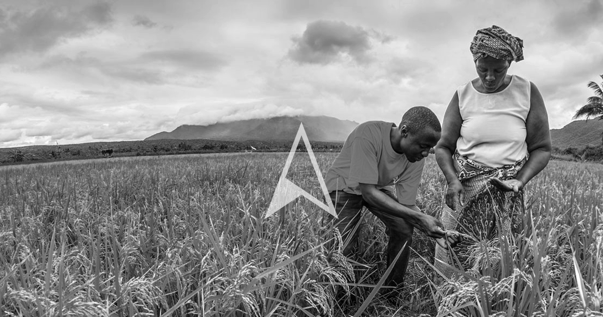
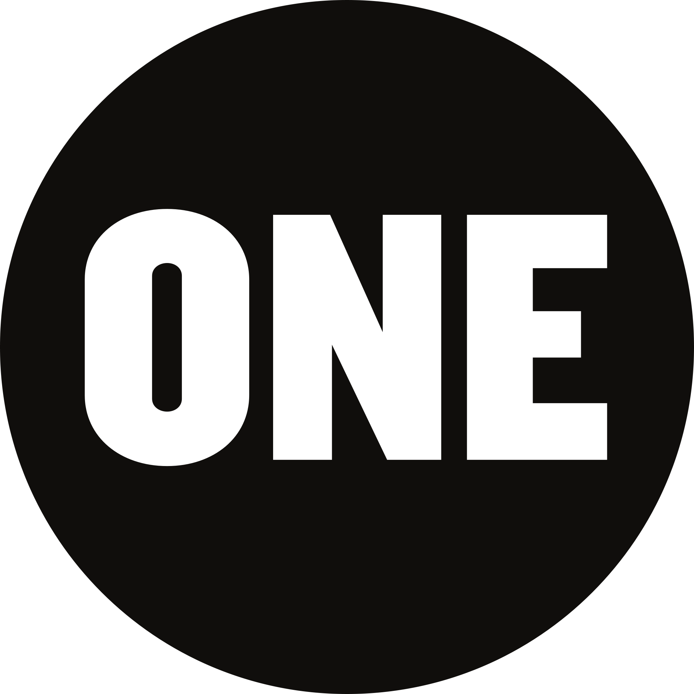
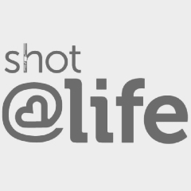
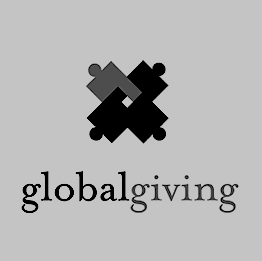
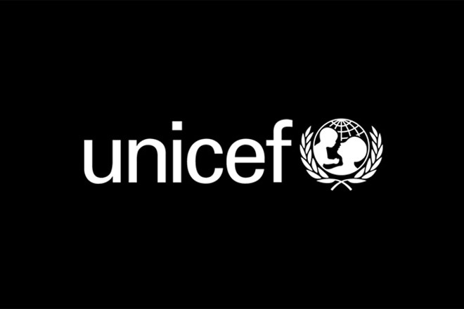
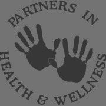
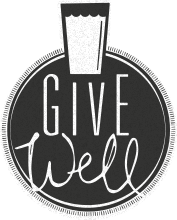
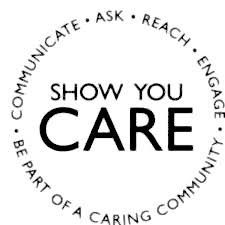
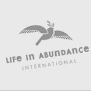
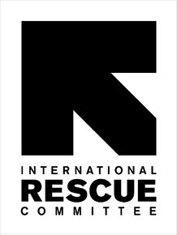

Make a difference today
& Connect with an organization below
-

World Vision
"World Vision is a Christian humanitarian organization dedicated to working with children, families, and their communities worldwide to reach their full potential by tackling the root causes of poverty and injustice."
-

ONE Campaign
"ONE Campaign uses grassroots and advocacy to raise awareness and money to help put a stop to global poverty. They mainly focus their attention on those living in impoverished conditions in Africa."
-

ShotatLife
"While Shot@Life is not primarily putting an end to global poverty, it is trying to eradicate one facet of it. Shot@Life is a nonprofit that provides vaccinations for those less fortunate so they will not be plagued by preventable diseases."
-

Global Giving
"Global Giving is a charity fundraising web site that gives nonprofits from anywhere in the world a chance to raise the money that they need to improve their communities. Since 2002, the project has raised $114,889,647 from 392,257 donors and has supported 10,252 projects."
-

UNICEF
"UNICEF is one of the largest nonprofit organizations and it is dedicated to helping children in need. UNICEF does so much for children around the globe, all while promoting education for girls and better health for pregnant women."
-

Partners in Health
"Partners in Health is another nonprofit much like Shot@Life, which is geared towards providing a better quality of living and preventing disease. Partners in Health partners with doctors and health institutions across the globe to provide much needed relief for people who would otherwise be unable to afford health care."
-

GiveWell
"GiveWell is a combination of several top rated charities all over the world. Most, if not all, of these charities provide relief for impoverished people in every nation."
-

CARE
"CARE wants to cut poverty off at its roots. This nonprofit provides tools for people who are at a higher risk of falling into poverty. They help people become successful and rise above the poverty within their nations."
-

Life in Abundance
"Life in Abundance is a Christian-run organization that mobilizes churches and missionaries alike to provide relief for those who are suffering. This nonprofit wants to provide a healthier lifestyle to those who are living in poverty."
-

International Rescue Committee
"The International Rescue Committee responds to the world’s worst humanitarian crises and helps people to survive and rebuild their lives to prevent global poverty. The nonprofit was founded in 1933 due to a request from Albert Einstein himself. The IRC has since offered lifesaving care and life-changing assistance to refugees forced to flee from war or disaster."
-
The Borgen Project
"The Borgen Project uses advocacy and volunteers to spread awareness for the global poverty cause. Their campaign has recently focused on the Senate’s Energize Africa Act, and they've played a large part in pushing the Electrify Africa Act through the House of Representatives and on to the Senate."